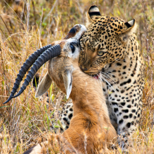
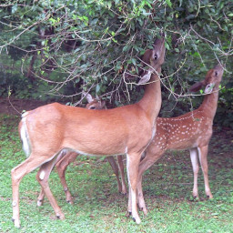
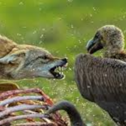

Predatismo
O predatismo é a relação de predador e presa entre diferentes espécies. Essa interação permite a criação de cadeias alimentares no reino animal e, com certa frequêcia, alguns seres desempenham papel duplo, ora sendo predadores, ora presas. Também é responsável pelo controle de indivíduos das espécies envolvidas.
Herbivoria
A herbivoria representa a relação entre herbívoros e plantas. Nela, os animais envolvidos possuem a vantagem por se alimentar de maneira vasta e constante. Por outro lado, as plastas perdem partes vivas, um fator limitante para estes seres. Essa interação é essencial para a formação de cadeias alimentares.
Amensalismo

O Amensalismo, também chamado de alelopatia, ocorre quando umas das espécies envolvidas libera compostos que não permitem a reprodução ou o crescimento da outra espécie em questão. Um exemplo dessa relação são os eucaliptos, que liberam essas substâncias no solo e evitam o desenvolvimento de outras plantas em determina região.
Parasitismo

O Parasitismo é a relação de parasita e hospedeiro, isso é, quando uma espécie retira os nutrientes de outra espécie. No geral, os parasitas não matam seus hospedeiros, contudo, os enfraquecem ao longo do tempo. Os parasitas são divididos em dois grupos: os ectoparasitas, que se desenvolvem na parte externa dos hospedeiros; e os endoparasitas, que se desenvolvem na parte interna. Algumas plantas também exercem a função de parasitas, pois suas raízes penetram o caule de outra planta e absorvem seus nutrientes. Essas podem sugar a seiva da hospedeira ou apenas água e sais que essa retira do solo.
Competição interespecífica
A competição interespecífica ocorre quando diferentes espécies disputam os mesmos recursos, devido aos seus semelhantes nichos ecológicos. Após certo tempo, essa relação pode ocasionar na extinção ou migração de umas das espécies envolvidas.
Fontes
- Mundo Educação
- Educa Mais Brasil
- Brasil Escola